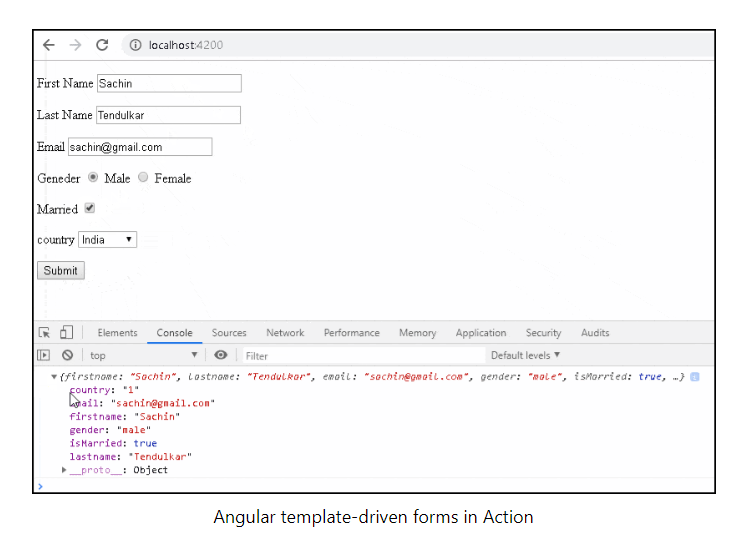

What are Reactive Forms?
Reactive forms are forms where we define the structure of the form in the component class. I,e we create the form model with Form Groups, Form Controls, and Form Arrays. We also define the validation rules in the component class. Then, we bind it to the HTML form in the template. This is different from the template-driven forms, where we define the logic and controls in the HTML template.
How to use Reactive Forms
1º Import ReactiveFormsModule.
2º Create Form Model in component class using Form Group, Form Control & Form Arrays
3º Create the HTML Form resembling the Form Model.
4º Bind the HTML Form to the Form Model.
Import ReactiveFormsModule
To work with Reactive forms, we must import the ReactiveFormsModule. We usually import it in root module or in a shared module. The ReactiveFormsModule contains all the form directives and constructs for working with angular reactive forms.
Model
In the template-driven approach, we used ngModel & ngModelGroup directive on the HTML elements. The FormsModule created the FormGroup & FormControl instances from the template. This happens behind the scene.
In Reactive Forms approach, It is our responsibility to build the Model using FormGroup, FormControl and FormArray.
The FormGroup, FormControl & FormArray are the three building blocks of the Angular Forms. We learned about them in Angular Forms Tutorial.
FormControl encapsulates the state of a single form element in our form. It stores the value and state of the form element and helps us to interact with them using properties & methods.
FormGroup represents a collection of form Controls. It can also contain form groups and form arrays. In fact, an angular form is a FormGroup. Let’s create the model for our Form. First, we need to import FormGroup, FormControl & Validator from the @angular/forms. Open the app.component.ts and the add following import statement
FormGroup
The FormGroup is created with the following syntax. The FormGroup takes 3 arguments. a collection of a child FormControl, a validator, and an asynchronous validator. The validators are optional.
FormControl
The first argument to FormGroup is the collection of FormControl. They are added using the FormControl method as shown below
In the above, we have created an instance of a FormGroup and named it as contactForm. contactForm is our top-level FormGroup. Under the contactForm, we have five FormControl instances each representing the properties firstname. lastname.email, gender, ismarried & country. The Other two arguments to FormGroup are Sync Validator & Async Validator. They are optional.
Html Form
The next task is to build an HTML form. The following is a regular HTML form. We enclose it in a form tag. We have included two text input (FirstName & LastName), an email field, a radio button (gender), a checkbox (isMarried), and a select list (country). These are Form elements.
Binding the template to the model
Now we need to associate our model to the Template. We need to tell angular that we have a model for the form. This is done using the formGroup directive as shown below.
We have used the square bracket (one-way binding) around FormGroup directive and set that equal the model. Next, we need to bind form fields to the FormControl models. We use the FormControlName directive for this. We add this directive to every form field element in our form. The value is set to the name of the corresponding FormControl instance in the component class.
Submit form
We submit the form data to the component using the Angular directive named ngSubmit. Note that we already have a submit button in our form. The ngSubmit directive binds itself to the click event of the submit button. We are using event binding (parentheses) to bind ngSubmit to OnSubmit method. When the user clicks on the submit button ngSubmit invokes the OnSubmit method on the Component class
Final Template
Our Final Template is as shown in left side.
Receive the data in the Component class
The last step is to receive the form data in the component class. All we need to do is to create the onSubmit method in our component class.
We are using the console.log(this.contactForm.value) to send the value of our form data to the console window. Test the form. Now you can run the app and see the result. Open the developer console and see the value returned by the contactForm.value. The values of the form are returned as JSON object as shown below, which you can pass it your backend API to persist the information to the database.
FormControl
A FormControl takes 3 arguments. a default value, a validator and an asynchronous validator. All of them are optional. Default Value You can pass a default value as either as a string or as an object of key-value pair. When you pass object you can set both the value and the whether or not the control is disabled.
Sync Validator
The second parameter is an array of sync Validators. Angular has some built-in Validators such as required and minLength etc. You can pass with Validator function as shown below.
Asynchronous validator
The third argument is the Async Validator. The syntax of Async Validators is similar to Sync Validators. More on validation in our next tutorial Validations in Reactive forms.
Grouping the controls using FormGroup
We can group various form controls together. For Example fields such as street, city, and Pincode each will have their own form control, but can be grouped together as an address form group
In the code above, we have created new FormGroup Address and added three form controls i.e city, street & Pincode. In the template use the formGroupName directive to enclose the control using a div element as shown below
What is Template-driven form?
In Template Driven Forms we specify behaviors/validations using directives and attributes in our template and let it work behind the scenes. All things happen in Templates hence very little code is required in the component class. This is different from the reactive forms, where we define the logic and controls in the component class.
The Template-driven forms
The form is set up using ngForm directive, controls are set up using the ngModel directive, ngModel also provides the two-way data binding. The Validations are configured in the template via directives
Template-driven forms are
Difficult to add controls dynamically
Unit testing is a challenge
Import FormsModule
To work with Template-driven forms, we must import the FormsModule. We usually import it in root module or in a shared module. The FormsModule contains all the form directives and constructs for working with forms
Open the app.module.ts and add the "import FormsModule from '@angular/forms'" to it.
And also add the FormsModule to the imports metadata property array
Html Form
The first task is to build the template. The following is a regular HTML form. We enclose it in a form tag. We have included two text input (FirstName & LastName), a email (email), a radio button (gender), a checkbox (isMarried), and a select list (country). These are form elements.
Receive Form Data
We need to receive the data in component class from our form. To do this we need to create the onSubmit method in our component class. The submit method receives the reference to the ngForm directive, which we named is as contactForm. The contactForm exposes the value method which returns the form fields as a Json object.
You can print the value to the console using the console.log(contactForm.value). Run the code now and enter some data into the form. Open the Developer Console in your browser and check the output, when you submit the data.
